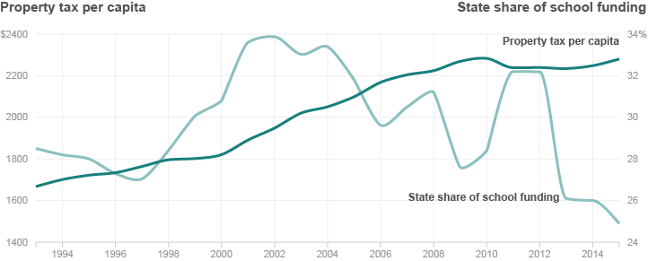

{% extends 'base_template.html' %}

{% block content %}

    {% if COPY.labels.headline %}<h1>{{ COPY.labels.headline|smarty }}</h1>{% endif %}
    {% if COPY.labels.subhed %}<h2>{{ render(COPY.labels.subhed)|smarty }}</h2>{% endif %}

    <div id="line-chart" class="graphic">
        
    </div>

    <div class="footer">
        {% if COPY.labels.footnote %}{{ COPY.labels.footnote|markdown|smarty }}{% endif %}
        {% if COPY.labels.source %}{{ COPY.labels.source|markdown|smarty }}{% endif %}
        {% if COPY.labels.credit %}{{ COPY.labels.credit|markdown|smarty }}{% endif %}
    </div>

    <script type="text/javascript">
        var DATA = {{ COPY.data.json() }};
    </script>

{% endblock content %}
